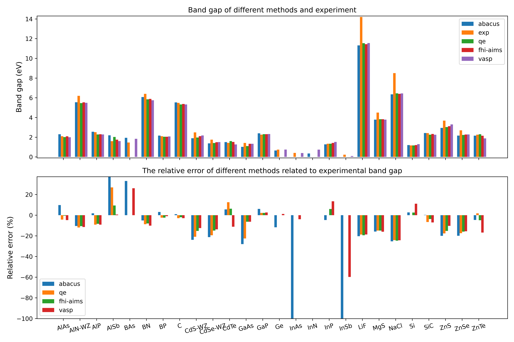

Test date: 2023-09-27.
Version : v3.3.4(4a6d764 (Tue Sep 26 14:08:49 2023 +0000))
1. Introduction
The bandgap is a key parameter for semiconductor systems, and in this test, we employed the ABACUS package in conjunction with the HSE hybrid functional to calculate the bandgaps of a series of typical semiconductors. Furthermore, we compared the results between abacus and reference HSE and experimental values. The reference values are obtained from the following sources: 10.1021/acs.jpclett.8b00919 and 10.1021/acs.jpclett.0c00481.
Click
here to check the ABACUS inputs.
Click
here to check more details of the calculations.
2. Results
The band gap of each system, calculated by ABACUS, along with the reference computed values from other software and experimental values, is presented in the following table. The values are in eV. The mean absolute error (MAE), and mean absolute relative error (MARE) of the results from different methods with respect to the experimental value are also listed.
Table. Band gap (eV) of each system, calculated by different softwares and experimental values.
Note: comp_ref_mean is the average of values obtained from QE, FHI-AIMS, and VASP. RE(expt,%) represents the relative deviation of ABACUS from the experimental value. RE(comp_ref_mean,%) represents the relative deviation of ABACUS from the comp_ref_mean. The absolute values of RE(comp_ref_mean,%) less than 10% are marked in green, and the others are marked in red.

Figure. Band gap of each system calculated by different softwares and experimental values, and the relative error from experimental values.